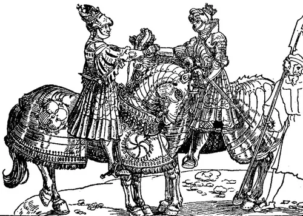

«Король Англии обязан был быть врагом Франции и Шотландии, союзницы Франции; он обязан был, если возможно, провозгласить свое право на корону одной страны и власть сюзерена над другой; он должен был, если хотел достичь полного величия, вести успешную войну.»
(J. D. Mackie, The Earlier Tudors 1485-1558, Clarendon Press, Oxford, 1952)
А что это мы все о французах да о французах? Мы же все-таки не придворные историографы у Людовиков. Не поговорить ли нам об англичанах? Боюсь, правда, что получится как в известном болгарском анекдоте: В Болгарии написано тысячи песен о красном вине, и только одна – о белом. И звучит она примерно так: «О, белое вино! Ну почему ты не красное?!»
Да, будем говорить об англичанах, имея в виду прийти в конце рассказа к истории первого Генерала галер Франции Прежана де Биду. Но это потом. А сейчас начнем о Генрихе VIII.
Генрих VIII взошел на трон 22 апреля 1509 года как законный преемник своего отца, Генриха VII. По темпераменту это были два совершенно разных человека. Отец был холодный, осторожный, прагматичный человек, которому удалось восстановить мир и стабильность в стране, до основания разрушенной в ходе войны Алой и Белой роз. Его сын, пришедший к власти в 18 лет, был энергичныый, воинственный, хорошо образованный человек, настроенный восстановить былую средневековую славу Англии.

Встреча Генриха VIII с императором Максимиллианом
Дело в том, что за годы правления Генриха VII карта Европы изменилась в пользу Франции, старого противника Англии. Несмотря на нерешительные меры Генриха VII и Максимиллиана, Императора Священной Римской империи, Герцогство Бретань было аннексировано Францией в 1492 году. Все южное побережье Британии оказалось в результате этого открытым для атак со стороны французских кораблей, базировавшихся в порту Бреста. Бретонцы славились своим искусством кораблестроения и мореплавания и явились бесценным дополнением к морской мощи Франции. Англия потеряла все свои континентальные владения за исключением Кале, ненадежного и дорогого опорного пункта сомнительного достоинства. Но владение Кале давало англичанам возможность относительно легко вторгнуться во Францию, и это поддерживало на плаву старую мечту о захвате французской короны.
Однако в отличие от Испании и Империи с одной стороны и Франции с другой, Англия не имела ни людских ресурсов, ни государственных доходов для начала войны на континенте. К счастью для Англии, главным регионом противостояния между Габсбургами и Валуа была Италия, а Северная Европа находилась как бы в зоне их бокового зрения, на втором плане. И кроме того, несмотря на относительно малый размер вооруженных сил Тюдоров, союз с Англией был выгоден как Франции, так и Империи.
Если бы Англия вступила в союз с Габсбургами против Франции, то все северное побережье Франции оказалось бы под угрозой удара. Это позволило бы отвлечь французские силы с других театров и могло поддержать удар на Францию со стороны габсбургских Нидерландов.
С другой стороны, альянс с Францией мог прервать морские связи между Испанией и Нидерландами и разрушить торговое процветание последних.
Англия была более склонна к союзу с Империей и Испанией, чем с Францией; Франция и Англия исторические противники, короли Англии имели притязания на французскую корону. Тенденция к союзу с Габсбургами была усилена браком Генриха VIII с Екатериной Арагонской в 1509 г. К тому же Нидерланды были основным рынком для важной для Англии торговли тканями и шерстью.
Эти варианты вступивший на престол Генрих VIII вынужден был рассматривать на фоне крайне необычной международной обстановки в Европе. Основные европейские державы того времени – Франция, Империя, Испания и Папская область – сформировали Кембрейскую лигу с целью отобрать у Венеции ее континентальные владения. Англия была в мире со всеми своими соседями. Но, учитывая характер молодого короля, этот мир не должен был продолжаться долго. И немалую роль в будущей войне должен был сыграть флот.
При восшествии на престол в 1509 г. Генрих VIII унаследовал от своего отца ядро английского военного флота в составе пяти кораблей, включая большие каракки Regent и Sovereign. Состав флота мог быть увеличен по обычаям того времени взятием в аренду или покупкой торговых судов, английских или иностранных, которые могли быть превращены в военные корабли после установки на них легкого вооружения в виде нескольких орудий и размещения десанта солдат. Но такой флот не соответствовал амбициям Генриха. Чтобы противостоять сильному французскому флоту, а также потенциально враждебному шотландскому флоту (N.A.M. Rodger (The Safeguard of the Sea: A Naval History of Britain Vol.1) полагает, что угроза со стороны новых шотландских кораблей, включающих Michael и Margaret, была определяющим фактором в решении Генриха расширить и осовременить свой флот), Генрих начал осуществение кораблестроительной программы, основой которой должна была послужить постройка Mary Rose и Peter Pomegranate. С технической точки зрения эти корабли радикально отличались от кораблей, доставшихся ему от отца. Они имели корпус, построенный вгладь, а не в клинкер, что позволило разместить тяжелые орудия близко к ватерлинии , проделав там водонепроницаемые пушечные порты.
[Мы опустим процесс строительства новых кораблей по причине большого обилия в этом описании технических вопросов и вопросов, связанных с финансированием. Кроме того, здесь еще много белых пятен, не исследованных даже на родине этих кораблей. Не известно даже точное место их постройки: то ли Портсмут, то ли Саутгемптон. Некоторые английские исследователи вообще сомневаются в существовании Mary Rose, полагая, что это название применялось к различным кораблям различных периодов, в том числе и к кораблю Генриха VIII Great Galley. Критический разбор источников, данный R.C. Anderson’ом в статье "Henry VIII's Great Galley" (Mariner's Mirror, Vol.6) вроде бы отклоняет такую версию, однако всех сомнений ему развеять на удалось. Общепризнанным является вариант, что Mary Rose была названа в честь любимой сестры Генриха Мери и розы, эмблемы Тюдоров. ]
Вернемся к теме в следующий раз.